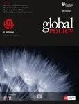

收录于合集

作品简介
【作者】 Haik Nikogosian长期以来一直参与公共卫生领域的领导职位，在卫生服务和政策方面发挥重要作用，应对重大的全球卫生挑战，促进前沿发展和国际卫生合作。他目前是日内瓦国际和发展研究所全球卫生中心的高级研究员，专注于全球卫生机制/外交和治理问题。
【编译】 缪高意（国政学人编译员，中国社会科学院大学）
【校对】 阮镇炜
【审核】 丁伟航
【排版】 贺奕
【来源】 Nikogosian, Haik. “Regional Integration, Health Policy and Global Health.” Global Policy , 2020, https://www.globalpolicyjournal.com/articles/health-and-social-policy/early- view-article-regional-integration-health-policy-and-global. Accessed June 29th, 2020.

期刊简介

《全球政策》是一本创新的跨学科杂志，汇集了世界一流的学者和领先的实践者，旨在分析全球问题的公共和私人解决方案。2019年该杂志影响因子为1.238。
区域一体化、卫生政策与全球卫生 ****
Regional Integration, Health Policy and Global Health ****
Haik Nikogosian
内容提要
尽管区域一体化进程主要是围绕贸易、经济和安全目标而发展的，卫生问题也同样是重要的，因为它与上述每个领域都有交集。迄今为止，关于区域一体化与全球和公共卫生关系的研究主要限于特定组织、地理区域和专门议题。本文则试图全面分析全球范围内区域一体化与全球和公共卫生的关系。本文论证区域一体化组织处理卫生服务和人口健康各方面问题的机制，并将分析体系化。同时，本文还探讨了这些机制以及一般的区域一体化进程如何促进国际卫生合作和全球卫生。本文认为，区域一体化的多学科格局为公共卫生政策的多部门层级和跨部门一致性的体现和发挥作用提供机会。本文还认为，卫生层面的区域一体化进程可能是全球卫生治理空间迅速扩大的一个重要组成部分。
文章导读
01
引言
在21世纪，全球卫生的架构（The architecture of global health）日益多元化。参与国际卫生合作行为体的增多，为扩大全球卫生治理空间作出重大贡献。与卫生问题有直接或间接影响的制度和进程（全球的、区域的和国家的）补充了原来有明确卫生授权的全球制度和进程。现有文献描述了一些在卫生领域有着明确或公认授权的全球组织以及它们的作用，而少有文献研究区域、追求区域一体化议程的制度和进程的作用和贡献。本文主要研究在全球卫生治理中，区域一体化议程的制度和进程的作用和贡献，以填补研究空白。
本文的目的有两个：第一，分析和体系化区域一体化组织处理卫生政策和人口健康各方面问题的机制；第二，探讨这些机制和区域一体化进程如何促进国际卫生合作和全球卫生。本文认为这两个目标是紧密相连的。探究法律、政治和区域一体化进程影响全球卫生的其他机制还能促进对这些进程在全球卫生方面的意义的理解。
02
区域一体化：全球格局（global landscape）
区域一体化组织的一体化形式和程度各不相同，从最基本的自由贸易区到关税同盟、共同市场和完全成熟的经济和政治联盟。区域组织主要在政府间决策的基础上运作，在某些情况下与超国家制度相结合。一些组织有其相应的议会、议会大会、议会联盟、议会论坛，有些拥有独特的法律权威。许多组织彼此具有观察员地位，同时也在联合国大会享有观察员地位。必须指出的是，多年来，政治分歧导致若干区域组织内的成员资格被暂停、撤回和重新接纳，这可能会对整个组织产生影响。在本文中，除非是直接相关，否则本文不考虑这个情况。
03
区域一体化组织如何处理卫生问题 ****
对现有材料的分析表明，区域组织与卫生有关的行动往往在四个不同的层面上进行。
1. 条约层面
大多数区域组织的创始条约通过总体目标（如社会和人类发展、国内市场、人权和劳工权利、货物和服务的自由流动、税收、技术法规）和部门政策（如关于食品安全、消费者保障，制药、农业、移民、旅游和环境）间接地处理卫生问题。此外，逐步扩张区域贸易协定以涵盖服务贸易具有显著影响。与此同时，由于政策的敏感性，尽管各国，特别是中等收入发展中的经济体对卫生服务贸易越来越感兴趣，卫生服务贸易仍然是所有主要服务部门中最受限制的。
2. 政治层面
一些首脑会议和若干区域组织的最高管理机构通过了关于卫生的高级别宣言、战略和行动计划。此外，大多数组织在许多情况下都就与卫生密切相关的事项，如粮食、运输、农业、移民、紧急情况和环境，采取立场并作出决定，将卫生目标纳入这些组织的高级别首脑会议范围。一些组织甚至召开特殊首脑会议，以应对区域关切的卫生挑战（例如，加勒比共同体和太平洋非传染性疾病首脑会议）。数个区域组织发起了卫生部长定期会议（东盟（ASEAN）、气候行动网络(CAN)、南方共同市场(MERCOSUR)、南亚区域合作联盟(SAARC)、太平洋共同体(PC)、上合组织(SCO)），或建立了部长级理事会/委员会/大会（南美国家联盟(UNASUR)、中美洲一体化体系(SICA)、西非国家经济共同体(ECOWAS)、独立国家联合体(CIS)、海合会(GCC)），作为卫生方面的部门性政治机构，这些机构经常得到高级官员和相关技术实体会议的支持。
此外，卫生目标往往得到区域一体化集团其他机关和制度的支持，例如：区域议会和立法议会（它们认可相关立法，比如示范法）；区域开发和投资银行（可为健康、医疗和生物技术项目提供资金）；区域法院（可要求其解释有关立法或解决有关公民跨境护理权利的法律纠纷）。
在卫生、经济和安全问题紧密相连的情况下，重大区域集团尤其需要对重大疫情和流行病的爆发作出政治反应。新冠疫情爆发促使欧盟采取前所未有的政治行动，包括暂时关闭欧盟边界、限制医疗必需品出口，以及支持卫生和其他受影响部门的数十亿投资计划。但新冠疫情也暴露了欧盟国家在欧盟范围内迅速作出反应的障碍和短板，以及欧盟在应对国际卫生危机方面可能为全球团结发挥的作用。
3. 技术层面
一些区域组织建立了专门的卫生机构，而这可能是最先进的技术合作机制。政府间卫生工作组则是另一种技术实体，例如亚太经合组织和南方共同市场使用的技术实体。各组织采用的其他机制包括区域参考和管理网络、登记处（registries）、数据库、倡议和伙伴关系。在某些情况下，这些机制产生了对于本区域而言特别重要的公共卫生产品。此外，区域组织可以作为主要区域卫生赠款的接受者。
4. 跨部门层面
除了传统的多部门卫生方式外，一些特别机制被用于技术和政治论坛上。例如，亚太经合组织卫生和经济部长联席年会；中美洲一体化卫生体系和经济一体化机构联席会议。不同部门卫生政策的一致性特别令人关切。例如，欧盟将贸易、移民、安全、粮食安全和气候变化确定为需要加强一致性的政策领域。
04
区域一体化进程如何促进全球卫生？ ****
为确保主要推动区域一体化进程的各种政治、贸易、经济和安全议程不排斥卫生议程，就必须在政府间和部门间一级进行大量谈判并建立共识。除了加强卫生层面的区域一体化，谈判和共识还有助于为一个区域参与全球外交和卫生治理奠定基础。本文揭示了区域一体化与全球卫生之间在内部、横向和纵向三个层面发生互动的更直接机制。
1. 内部
一些组织明确提出了它们在全球卫生中的作用设想（如欧盟）；另一些组织则一直在促进履行与其区域尤为相关的全球条约（例如亚洲细胞治疗学会(ACTO)大力支持水俣公约）。
2. 横向
区域集团相互合作，以取得更强有力的集体成果，包括卫生成果。这种合作可能发生在一个区域内，也可能发生在区域间。卫生议题也可纳入涉及主要全球卫生行为体的扩大的区域合作框架，例如“10+3”（东盟+中国、日本、韩国）合作进程。
3. 纵向
多年来，出现了一些这样的机制——一些区域集团的成员协调他们在世卫组织的发言权，这一机制补充了世卫组织区域内各成员国之间的既定协调。一些组织与世卫组织建立起更为定期的制度关系；以及区域集团与其各自的世卫组织区域办事处建立的各种合作进程。在一些情况下，制度关系涵盖世卫组织以外的全球卫生行为体。许多区域集团和与世卫组织有共同议程或以其他方式影响全球和公共卫生的专门国际机构和机构合作；这种联系有可能会增加区域集团采取多部门和多学科卫生行动的机会。值得注意的是，一些区域集团的政治立场被证明有助于将某些议题放在全球议程的首位。
在另一个机制中，区域一体化组织可以直接接受和支持全球卫生条约，这体现在欧盟大力支持谈判，然后作为正式缔约方加入世卫组织《烟草控制框架公约》（WHO FCTC）及其《消除烟草制品非法贸易议定书》。鉴于贯穿各领域的议程在大多数一体化进程中占主导地位，在谈判未来可能的全球卫生条约（或具有卫生影响的条约）和旅行现有条约时，区域多部门外交对于维护卫生目标至关重要。
此外，与所有这三个层面相关的是，卫生往往被视为行使软实力的一个领域，通过这个领域，区域组织能够加强其成员国之间的一般联系、合作和信任，并促进整个区域的稳定。同时，由于卫生在全球治理中的地位普遍较高，区域卫生外交常常成为一种工具，使区域集团及其成员，特别是小国，在全球舞台上处于更有利的地位。具体言之，如上述做法所示，区域一体化可能有助于巩固和利用各国在应对全球共同挑战方面的集体意愿和知识。
05
结论 ****
1. 是什么推动了区域和卫生政策的结合？
尽管区域一体化进程主要是围绕贸易、经济和安全目标而发展的，卫生问题也同样是重要的，因为它与上述每个领域都有交集。贸易既可以改善卫生，也可以削弱卫生；卫生领域的问题可能阻碍和消耗经济收益；传染病和疫情的跨境传播对区域安全造成威胁。此外，在大多数区域一体化进程中，卫生和外交政策相互作用的重要因素，如人权、发展和社会正义等，往往也是贯穿各领域的问题。具体言之，由于社会经济、商业和政治的决定因素，经济一体化的多学科格局为公共卫生的多部门层面提供发挥作用的机会。这反过来又可能扩大不同部门在面对各国政府在国内和国际上经常相互竞争的议程时保护和促进卫生政策一致性的机会。因此，卫生和健康在区域一体化议程中可预见地显现出来，这可能也是经济和政治一体化的社会效益的一个指标。
2. 如何在区域一体化进程中真正解决卫生问题？
分析表明，一般方式包括：一方面解决卫生危害和健康不良（ill health）对贸易、安全和经济的阻碍；另一方面促进卫生对人力资本、包容性增长和发展的贡献。正如前文分析，这些方式似乎在多个层面（条约、政治和技术层面）以及通过各种部门间模式得以实现。大多数区域集团的贸易和经济议程往往直接或间接地包括卫生安全保护，并将卫生安全作为维护社会公正和公共利益的一部分。关于食品和医疗产品的安全和质量的技术法规、促进职业卫生的劳工标准以及跨国界获得卫生服务，都是经济一体化的社会成果。这与早先的一项观察结果相一致，该观察认为，卫生是一个一体化的场所，是重新连接区域主义和社会政策的驱动力。
3. 区域一体化对全球卫生有影响吗？
正如分析所显示的那样，作为出发点，区域一体化进程对全球卫生的贡献，通常一方面取决于其跨国性和交叉性，另一方面取决于卫生部门以外的行为体在全球卫生治理中的作用。具体言之，本文认为区域一体化组织和进程虽然不是全球卫生体系的正式组成部分，但可能在全球卫生治理中占有突出地位。全球卫生治理是一个相对较新的治理空间，主要归功于国家和区域制度和机制（与分别指专门从事卫生或影响卫生的全球行为体的全球卫生治理和全球治理的卫生议题相对）。
这些组织和进程对全球卫生架构和治理的贡献可以通过不同层次的机制来实现——内部（区域组织内部）、横向（区域组织之间）和纵向（区域组织与全球卫生行为体和进程之间）。不同组织采用的机制一般包括：为本组织在全球卫生中的作用制定战略构想；围绕全球关注的卫生挑战开展组织间合作；支持全球卫生条约或与卫生有关的全球条约；对全球卫生紧急情况采取集团范围内的应对措施；在全球谈判桌上讨论新出现的卫生议题；在全球论坛上利用成员国的专长。与发展援助有关的全球卫生影响是另一个值得考虑的重要机制，例如，欧盟将卫生作为其发展政策的一个重要组成部分。总的来说，区域一体化进程的卫生层面，以及金砖国家和“一带一路”等重要跨区域联盟和倡议对卫生的日益关注，可能在迅速扩张的全球卫生治理空间中发挥重要作用。上述分析的另一个观察结果是，支持全球治理的区域行动往往与协调一致的区域卫生外交联系在一起，这可能是对国家和全球两级卫生外交的补充和中介。在这种情况下，卫生外交的三个层面可以被看作是相互关联、相辅相成的。
总之，尽管卫生通常不是一体化议程的核心领域，但在区域一体化进程中，卫生问题往往以各种方式得到解决或受到影响，并在国家、区域和全球各级产生影响。卫生的跨部门和跨国界层面，以及卫生、外交政策、经济和发展之间日益密切的联系，为区域一体化组织促进全球和公共卫生以及国际卫生合作提供了机会。前几节提及的实践表明，区域一体化组织可能通过其法定战略并将将全球优先事项转化为区域行动的方式来实现。
译者评述
新冠疫情全球性爆发，全球卫生治理体系受到挑战，学界也就卫生治理相关问题进行更深入的讨论。区域一体化实践是21世纪国际关系实践的重要特征。迄今为止，关于区域一体化与全球和公共卫生关系的研究主要限于特定组织、地理区域和专门议题。本文则试图全面分析全球范围内区域一体化与全球和公共卫生的关系。
本文以较为宏观的视角，分析了区域一体化与卫生政策的关系、如何在区域一体化进程中解决卫生问题，以及区域一体化对全球卫生的影响。视角新颖且富有启示性，为接下来关于区域一体化与卫生治理的研究搭建框架。我们可以在此基础上，具体到特定区域的一体化组织中，更深入地研究这个问题。比如在欧盟，近期的新冠疫情暴露了欧盟范围内迅速作出反应的障碍和限制，以及欧盟在应对国际卫生危机方面可能为全球团结发挥的作用，这些问题可能是基于本文的更进一步探讨。
文章观点不代表本平台观点，本平台评译分享的文章均出于专业学习之用, 不以任何盈利为目的，内容主要呈现对原文的介绍，原文内容请通过各高校购买的数据库自行下载


好好学习，天天“在看”
国政学人
支持学术公益与知识传播
微信扫一扫赞赏作者 __赞赏
已喜欢，对作者说句悄悄话
取消 __
发送给作者
发送
最多40字，当前共字
上一页 1/3 下一页
长按二维码向我转账
支持学术公益与知识传播
受苹果公司新规定影响，微信 iOS 版的赞赏功能被关闭，可通过二维码转账支持公众号。